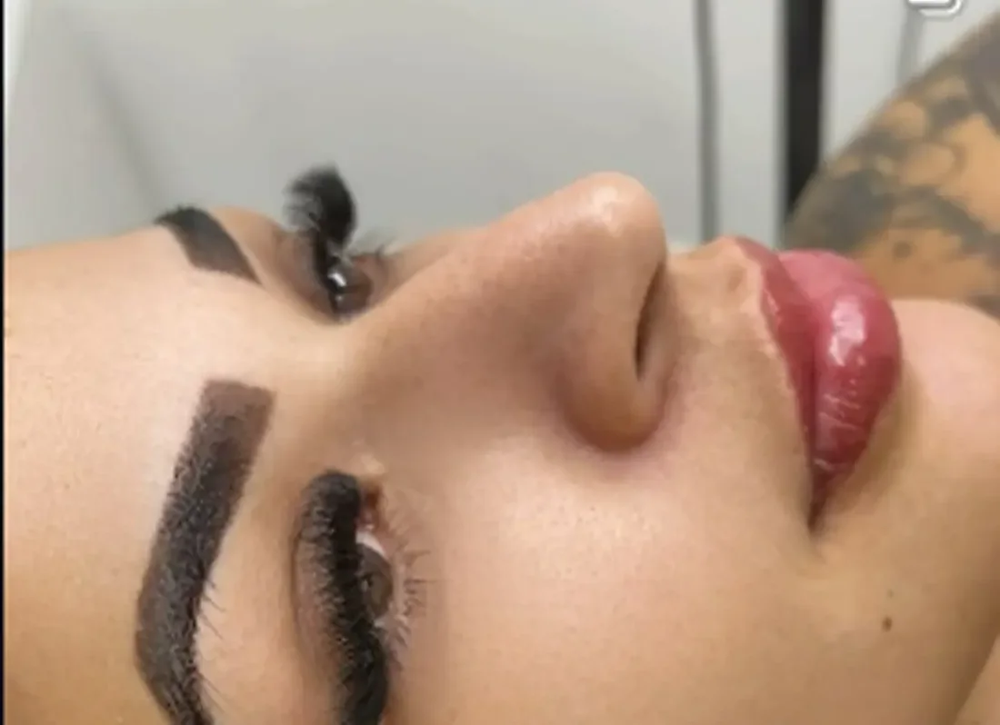

01 · LASH
Extensão de cílios
Aplicação personalizada com fios tecnológicos e atenção à durabilidade, leveza e acabamento.
Cílios e sobrancelhas · Cubatão, SP
Extensão de cílios com foco em durabilidade, fios tecnológicos e cuidados para realçar sua beleza com personalidade.

Sobre a profissional
Técnica, precisão e escolhas pensadas para cada olhar.
Geovana Fernanda atua com cílios e sobrancelhas no Centro de Cubatão. O atendimento combina análise do olhar, seleção de técnica e acabamento personalizado.
O objetivo é criar um resultado que converse com seus traços e sua rotina — da extensão de cílios ao cuidado com as sobrancelhas.
“Durabilidade e leveza podem fazer parte do mesmo resultado.”
Procedimentos
A técnica ideal é escolhida após entender o efeito que você busca. Valores, duração e disponibilidade são confirmados diretamente no agendamento.
Aplicação personalizada com fios tecnológicos e atenção à durabilidade, leveza e acabamento.

Efeito alongado para valorizar o canto externo dos olhos e criar um olhar mais marcante.

Alinhamento dos fios para sobrancelhas mais definidas, organizadas e com presença.

Desenho pensado para harmonizar o formato das sobrancelhas com os traços do rosto.
Consulte valores, disponibilidade e orientações de manutenção pelo WhatsApp.
Portfólio
Uma seleção de trabalhos publicados no perfil profissional da Geovana.

Experiência
O atendimento começa com uma conversa sobre o efeito, intensidade e rotina de manutenção desejados.
Formato dos olhos, fios naturais e objetivo visual orientam a escolha do procedimento.
Orientações de cuidados ajudam a preservar o acabamento e a retenção do procedimento.
Atendimento
Entre em contato para consultar agenda, valores e disponibilidade dos procedimentos.
Atendimento mediante agendamento. O endereço completo é informado na confirmação.
Agendamento
Fale com a Geovana e encontre o procedimento ideal para você.
Agendar pelo WhatsApp